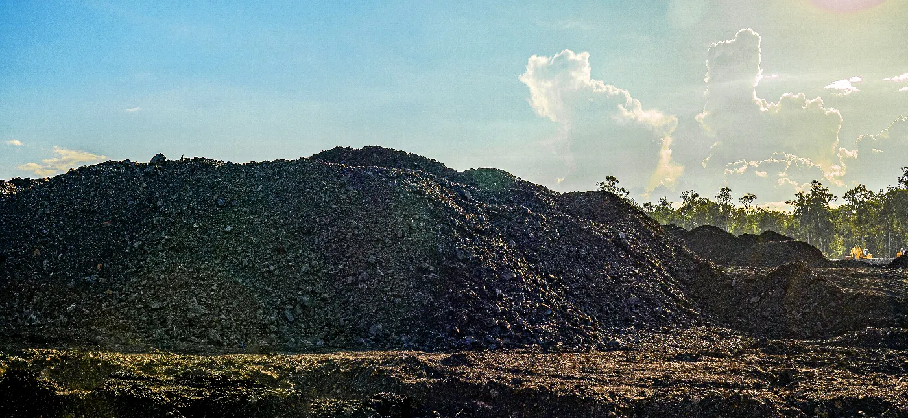
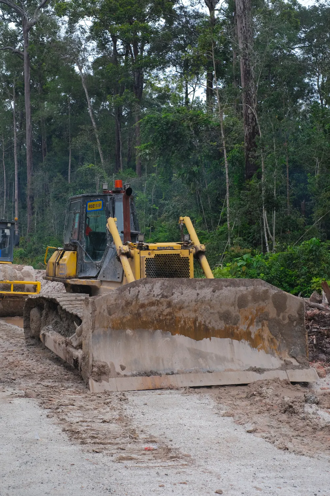
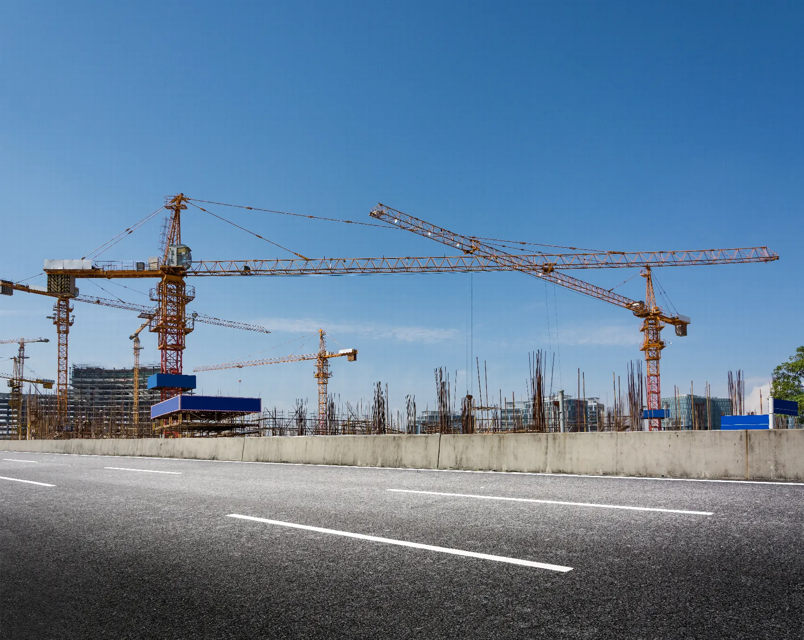

Pertambangan batubara.Coal mining.

Batubara untuk kebutuhan dalam dan luar negeri.Coal for local and international needs.
PKPK mengembangkan kegiatan pertambangan batubara untuk memenuhi permintaan di Indonesia dan pasar luar negeri. Usaha tambang menjadi inti pengalaman operasional perusahaan di Kalimantan.PKPK is expanding its coal mining activities to serve demand in Indonesia and overseas markets. Mining sits at the centre of the company's operating experience in Kalimantan.
Alat berat dan dukungan operasi.Equipment and operating support.

PKPK menyewakan alat berat serta menyediakan dukungan operasi, perawatan, dan suku cadang untuk kendaraan ringan dan berat.PKPK leases equipment and provides operating support, maintenance, and spare parts for light and heavy vehicles.
- Sektor
- Sectors
- Pertambangan, perkebunan, serta minyak dan gasMining, plantations, and oil and gas
- Cakupan dukungan
- Support scope
- Operasi, perawatan, dan suplai suku cadangOperations, maintenance, and spare-parts supply
- Jenis armada
- Fleet
- Kendaraan ringan dan beratLight and heavy vehicles
Penyiapan lahan.Land preparation.

Menyiapkan lokasi sebelum pekerjaan dimulai.Preparing the site before work begins.
PKPK memiliki pengalaman luas dalam penyiapan lahan, dengan area operasi terbesar tersebar di Kalimantan. Penyiapan lahan mengubah lahan kosong menjadi lokasi proyek yang siap beroperasi.PKPK has extensive experience in land preparation, with its largest operating areas across Kalimantan. Preparation turns undeveloped land into a project site ready to operate.
Konstruksi, dari perencanaan sampai perawatan.Construction, from planning to maintenance.
Perusahaan lokal dan nasional mempercayakan PKPK pada perencanaan, desain, fabrikasi, instalasi, pengujian, dukungan material, tenaga kerja, dan perawatan.Local and national companies have assigned PKPK planning, design, fabrication, installation, testing, material support, labour services, and maintenance.

- Pipa minyak dan gasOil and gas pipelinesPemasangan dan perawatan jaringan pipa migas.Pipeline installation and maintenance.
- Mekanikal dan elektrikalMechanical and electricalInstalasi mesin, kelistrikan, dan instrumentasi.Machinery, electrical, and instrumentation installation.
- Fasilitas produksiProduction facilitiesInstalasi peralatan produksi dan fasilitas pendukung.Production equipment and supporting facilities.
- Bangunan dan arsitekturBuildings and architectureKonstruksi gedung dan pekerjaan arsitektur.Building construction and architectural work.
- Struktur bajaSteel structuresPenyangga baja untuk migas darat dan lepas pantai.Steel supports for onshore and offshore oil and gas.
- Sipil dan pekerjaan tanahCivil and earthworksKonstruksi sipil dan pekerjaan tanah untuk lokasi operasi.Civil construction and earthworks for operating sites.
Diskusikan kebutuhan proyek Anda.Discuss your project requirement.
Tim pemasaran di kantor Jakarta menerima permintaan proyek dan kemitraan.The marketing team at the Jakarta office handles project and partnership enquiries.